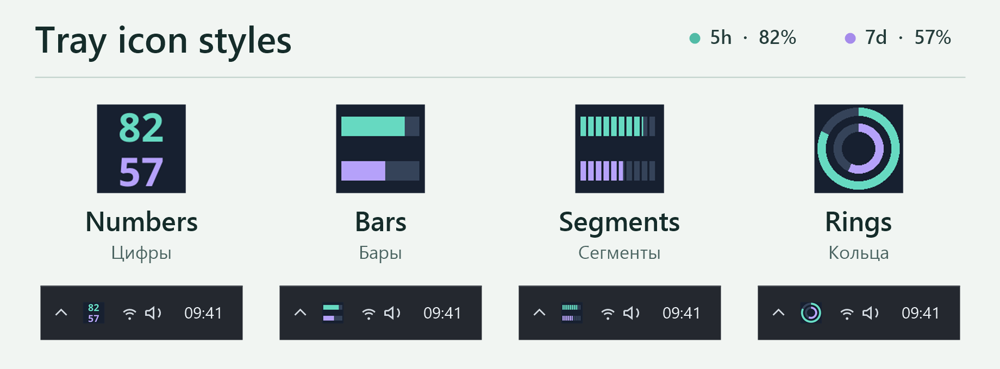
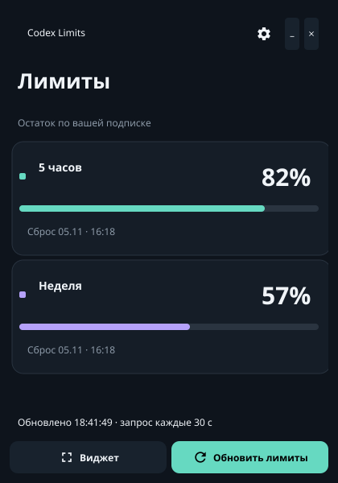

Windows · Бесплатно, с открытым кодом
Лимиты Codex в трее Windows
Смотрите, сколько осталось от пятичасового и недельного лимитов Codex и когда они сбросятся. Значок можно закрепить рядом с часами, а компактный виджет оставить поверх окон.
Установщик для Windows x64 · Нужен установленный Codex со входом в аккаунт


Установка
Как вывести лимиты Codex в трей
- Войдите в Codex. Используйте Codex Desktop или выполните
codex login. Отдельный аккаунт или ключ API для Codex Limit Tray не нужны. - Запустите установщик. Приложение устанавливается для вашего пользователя Windows без прав администратора. Установщик не подписан, поэтому Windows SmartScreen может показать предупреждение. Скачивайте файл только из GitHub Releases этого проекта.
- Откройте Codex Limit Tray. Закройте окно, и приложение продолжит работать в трее. Нажмите на значок, чтобы посмотреть остаток и время сброса.
